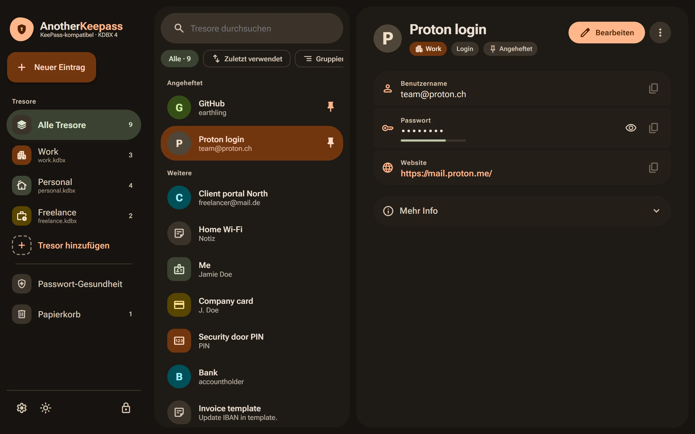
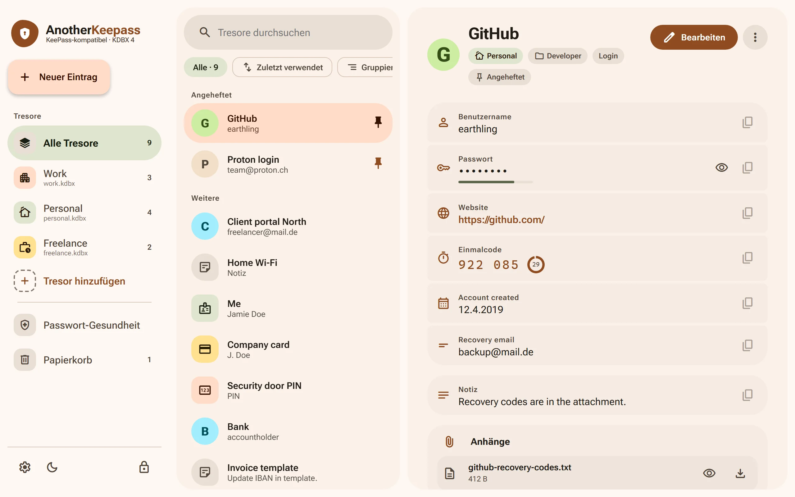
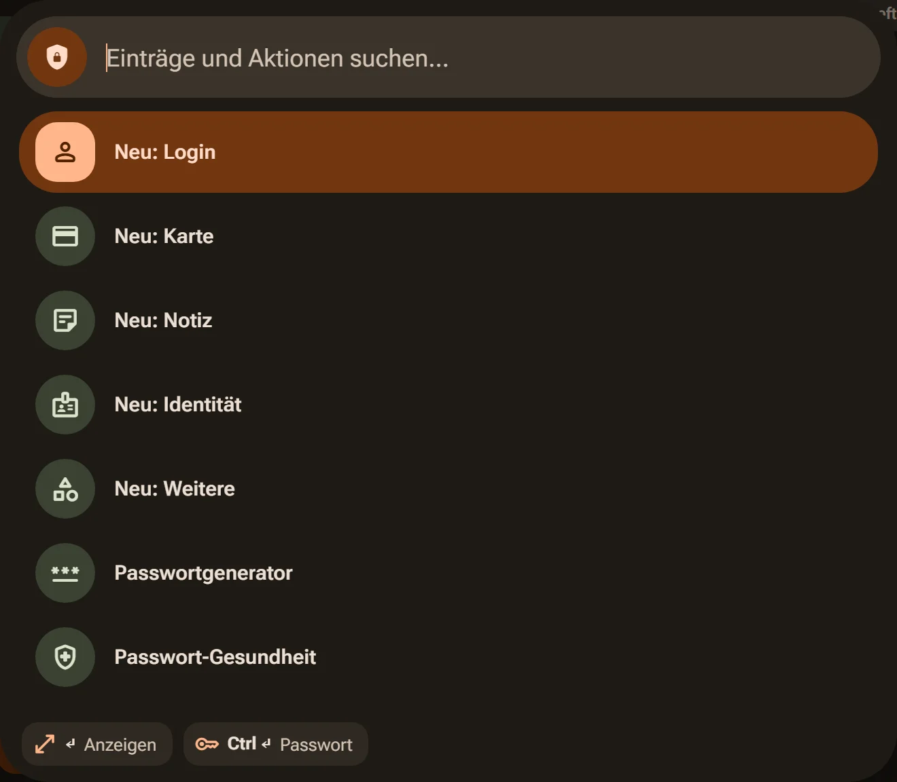
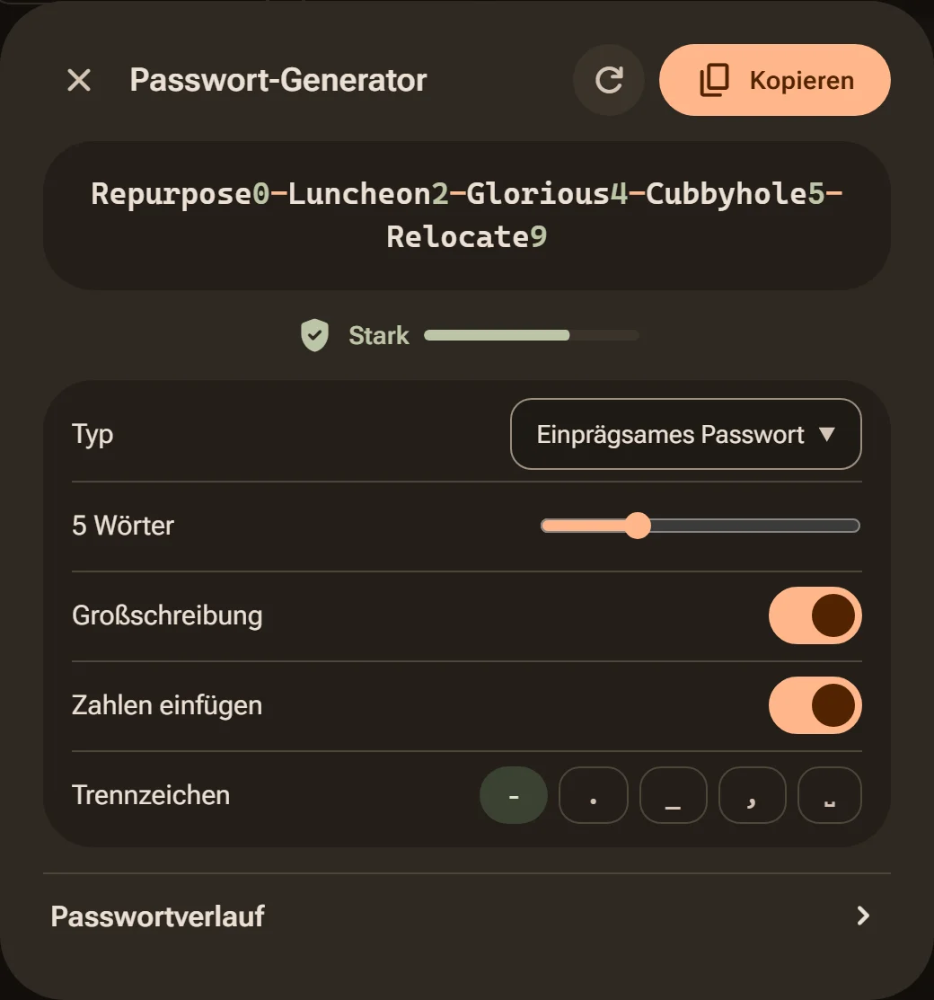

Passwörter in einer Datei, die dir gehört.
AnotherKeepass ist ein Passwortmanager für den Desktop. Deine Tresore bleiben ganz normale KeePass-Dateien – neu ist nur, wie angenehm man damit arbeitet.
Für Windows herunterladenInstaller, 64-BitAnotherKeepass läuft auf Windows- und Linux-Rechnern. Für Smartphones gibt es keine eigene App – deine .kdbx-Datei öffnet dort aber zum Beispiel KeePassDX.

Kein eigenes Format. Kein Konto. Kein Umzug.
AnotherKeepass liest und schreibt KDBX 4, das Format von KeePass. Deine Tresore liegen als Dateien dort, wo du sie hinlegst – auf der Festplatte, im Netzlaufwerk oder in deinem Cloud-Ordner. Wenn du die App morgen nicht mehr willst, öffnest du dieselbe Datei einfach mit einem anderen Programm.
Ältere KDBX-3.1-Dateien werden gelesen und beim ersten Speichern auf KDBX 4 gehoben, wie in KeePassXC. Das Original bleibt als .kdbx3-backup liegen.
- KeePassXC
- KeePass2
- KeePassDX
Mehrere Tresore, gleichzeitig offen.
Öffne mehrere Tresore auf einmal und such über alle zugleich. Jeder Tresor bekommt Farbe und Symbol, damit du nie im falschen speicherst.

- Ordner und TagsOrdner sind KeePass-Gruppen, Tags bleiben Tags. Wichtiges heftest du oben an.
- Mehr als LoginsKarten, Identitäten, PINs, Notizen und Vorlagen – mit eigenen Feldern, wo du sie brauchst.
- EinmalcodesTOTP direkt im Eintrag, im selben Format wie KeePassXC.
- Anhänge und VerlaufDateien, Ablaufdaten und frühere Versionen eines Eintrags – alles native KDBX-Funktionen.
- PapierkorbGelöschtes landet im KeePass-Papierkorb und lässt sich zurückholen.
- Hell oder dunkelZwei Designs, vier Sprachen: Deutsch, Englisch, Französisch und Spanisch.

Die Maus darf liegen bleiben.
- Strg K
Befehlspalette. Einträge finden, neue anlegen, den Generator öffnen – alles aus einem Suchfeld.
- Strg Alt K
Schnellzugriff von überall. Ein kleines Suchfenster über jeder Anwendung: Enter kopiert das Passwort, Umschalt+Enter den Benutzernamen, Strg+Enter tippt die Anmeldung.
- Auto-Type
Anmeldung eintippen lassen. Passende Einträge stehen oben, gewählt wird im Schnellzugriff.
- Infobereich
Läuft leise mit. Das Symbol in der Taskleiste zeigt, ob noch ein Tresor offen ist.
Gute Passwörter, ohne darüber nachzudenken.
Generator
Zufällige Zeichenfolgen oder einprägsame Passphrasen aus einer Wortliste – mit Trennzeichen, Zahlen und Großschreibung nach Wahl.
Ehrliche Stärkeanzeige
Bewertet mit zxcvbn: Wörter, Daten, Tastaturmuster und die eigenen Daten des Eintrags zählen als schwach.
Passwort-Gesundheit
Findet schwache, mehrfach verwendete und alte Passwörter in allen offenen Tresoren.
Datenlecks prüfen
Fragt auf Wunsch haveibeenpwned.com anonym ab, ob ein Passwort in bekannten Lecks aufgetaucht ist.

Passt zu dem, was du schon benutzt.
- Browser
- Funktioniert mit der Erweiterung KeePassXC-Browser für Firefox, Chrome, Edge und andere – einschließlich Passkeys.
- Vaultwarden
- Öffne ein Vaultwarden-Konto wie einen Tresor, auch mit Organisationen und Sammlungen. Oder halte eine
.kdbx-Datei und ein Konto in beide Richtungen synchron. - Umzug
- Importiere Exporte aus Bitwarden, 1Password, Proton Pass und KeePassXC (CSV).
- SSH-Schlüssel
- Reicht Schlüssel aus dem Tresor an deinen SSH-Agent weiter, kompatibel mit KeeAgent.
- KeeShare
- Teile Ordner über eine eigene Datei mit anderen – im selben Verfahren wie KeePassXC.
- Windows Hello
- Nach dem Sperren mit Gesicht, Fingerabdruck oder PIN wieder entsperren statt mit dem Master-Passwort.
Geheimnisse bleiben, wo sie hingehören.
Getrennte Prozesse
Der Tresor liegt in einem Rust-Prozess. Die Oberfläche sieht ein Passwort nur, wenn du es anzeigen oder bearbeiten willst. Beim Sperren werden geschützte Werte im Speicher überschrieben.
Vorsichtige Zwischenablage
Kopierte Passwörter gehen direkt in die Zwischenablage, tauchen nicht im Windows-Verlauf auf und werden nach der eingestellten Zeit gelöscht – nur, wenn du inzwischen nichts anderes kopiert hast.
Gehärtet
Andere Programme können den Speicher der App nicht auslesen, Browser- und SSH-Verbindung sind nur für dich offen, Kontodaten schützt Windows DPAPI. Master-Passwörter werden nie gespeichert.
Signierte Updates
Die App sucht selbst nach neuen Versionen und installiert nur, was die Signatur des Projekts trägt.
Offen gebaut
Der Quellcode steht unter GPL-3.0 auf GitHub, Releases baut GitHub Actions direkt aus dem getaggten Stand.
Was nicht geschützt ist: Alles, was gerade auf dem Bildschirm steht, liegt auch im Speicher der Oberfläche. Wir schreiben das lieber hin, als es wegzulassen.
Herunterladen
Neueste Version auf GitHubKostenlos, ohne Konto und ohne Registrierung. Einmal installiert, hält sich die App selbst aktuell.
Windows64-Bit (x64)
Installer mit Startmenü-Eintrag und automatischen Updates. Benötigt die WebView2-Laufzeit, die bei Windows 11 bereits dabei ist.
Installer (.exe)von GitHubLinux64-Bit, AppImage
Vorschau
Baut auf Ubuntu 22.04 und sollte auf den meisten aktuellen Distributionen starten, ist aber noch kaum getestet. Auto-Type-Fenstererkennung, Browser-Registrierung und Sperren mit dem Bildschirm fehlen noch.
macOSderzeit nicht
Es gibt keine Builds für macOS.
Gut zu wissen
- Die Windows-Version ist noch nicht code-signiert. Windows kann deshalb vor einem unbekannten Herausgeber warnen.
- Microsoft Defender meldet frische, unsignierte Builds manchmal fälschlich. Die Signierung ist beantragt.
- Von 0.1.0 kommend: einmal von Hand deinstallieren, App-Daten dabei behalten.
Selbst bauen
Mit Node.js, Rust und den Tauri-Voraussetzungen:
git clone https://github.com/bohannjein/AnotherKeepass.git
cd AnotherKeepass && npm ci
npx tauri buildAnleitung
Von der Installation bis zur Browser-Erweiterung, Schritt für Schritt.
- Installieren und aktualisierenWindows, Linux, automatische Updates
- Erster StartTresor öffnen oder neu anlegen
- Browser verbindenKeePassXC-Browser einrichten
- Von einem anderen Manager umziehenBitwarden, 1Password, Proton Pass, Vaultwarden
- Wie Daten in der Datei liegenZuordnung zu KDBX
- Wenn etwas haktWarnungen, Defender, KeePassXC parallel